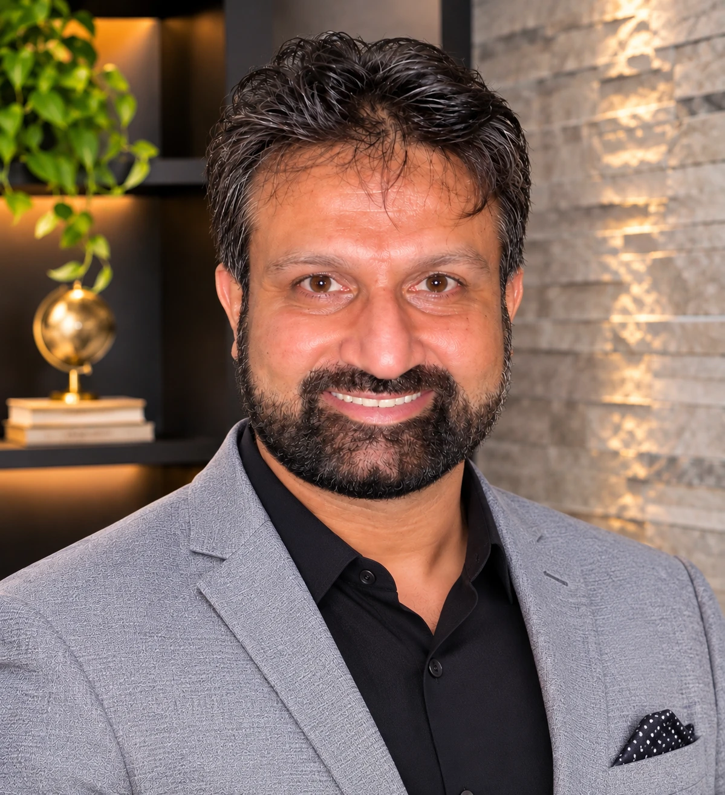

Leadership
The people who stay until it's delivered

Photo placeholder
Babar Maqsood
Founder
Babar believes a consultancy earns its place by becoming part of the client's organization, not by visiting it.
Hover to read more
Babar Maqsood
Founder
Babar Maqsood is the founder of D++, where he leads a global consulting practice that helps enterprises turn data and AI into measurable results. He works alongside leadership teams in healthcare, energy and industry to frame the problems worth solving, then stays with them through the build. A serial entrepreneur, Babar also advises early-stage and mid-size companies on growth, technology strategy and building the teams to sustain both.
Photo placeholder
Awais Baig
Chief Strategy Officer and Senior Advisor
Awais believes a strategy earns its keep in the field, not in the boardroom.
Hover to read more
Awais Baig
Chief Strategy Officer and Senior Advisor
Awais Baig is Chief Strategy Officer and Senior Advisor at D++, where he helps shape the firm's direction and advises clients on the decisions that set theirs. He brings more than two decades of global leadership experience across several verticals of the energy and oil and gas sector, and the operator's view that comes with it: a strategy is only as good as its performance in the field.
Photo placeholder
Zeeshan Baig
Chief Operating Officer
Zeeshan believes great delivery is a discipline: clear owners, honest status and no surprises.
Hover to read more
Zeeshan Baig
Chief Operating Officer
Zeeshan Baig is Chief Operating Officer of D++, where he leads how the firm operates and delivers for its clients. He brings more than two decades of senior technology and operational leadership across the service industry and the public sector, environments where reliability, accountability and clear ownership are not optional.
Photo placeholder
Adil Baig
Chief Technology Officer
Adil believes innovation only counts once it is running in production.
Hover to read more
Adil Baig
Chief Technology Officer
Adil Baig is Chief Technology Officer of D++, where he leads the engineering behind the systems D++ builds with its clients. He brings more than a decade of senior technology development and innovation roles at global companies known for moving fast. His focus is simple: getting new ideas out of prototype and into production.